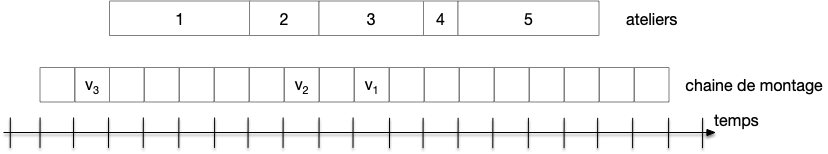
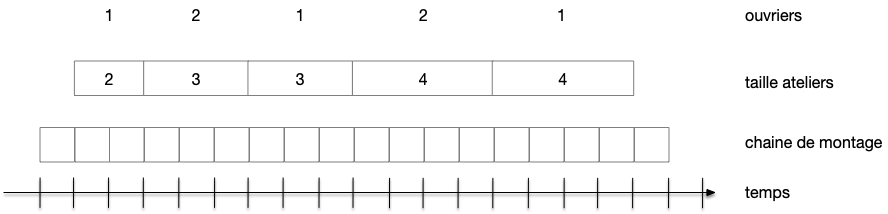

Algorithmes gloutons
L'objectif est de montrer l'intérêt des algorithmes gloutons, la façon de les construire et de prouver qu'ils fonctionnent. On s'attachera dans ce cours à prouver qu'ils rendent une solution optimale à un problème donné.
TBD équivalent discret de trouver un minimum avec le gradient. TBD comme c'est discret des étapes et pas de dérivées. TBD certain minima local = global (comme fct convexe), mais souvent pas le cas.
Définition
Un algorithme glouton choisit à chaque étape la meilleure possibilité localement et ne se remet jamais en question.
Certains problèmes permettent d'être résolus en construisant petit à petit une solution, sans jamais remettre en cause ses choix. On peut alors souvent trouver très rapidement la meilleure solution possible. On peut également utiliser cette solution construite petit à petit pour trouver une solution approchée à un problème plus général. Cette classe d'algorithmes qui construit itérativement d'une solution est appelée algorithmes gloutons.
Le schéma général d'un algorithme glouton est alors le suivant :
algorithme glouton_archétypal(E: [fragments de solutions]) → [fragments de solutions]: # une solution est constituée d'un ensemble de fragments
"Bien ordonner" E en (x_0, x_1, ..., x_n)
S ← []
pour chaque i de 1 à n:
si S + [x_i] est une "solution possible" :
S ← S + [x_i]
rendre SIl va y avoir tout un tas de variantes de ce schéma pour trouver une solution au problème concret à résoudre, mais on voit déjà que ce type d'algorithme va nécessiter :
- que les solutions recherchées soient constituées d'un ensemble maximal de fragments de solutions
- de pouvoir bien ordonner les fragments pour les étudier un à un
Le fait de bien ordonner les fragments permet de les considérer du meilleur au moins bon et ainsi de construire itérativement une solution maximale sans jamais remettre en question les choix précédents (c'est glouton, greedy en anglais).
Les algorithmes gloutons sont très utilisés car une fois que l'on a une façon d'ordonner les fragments et de caractériser ce qu'est une solution :
- ils donnent toujours un résultat
- ils sont de complexités faibles
Attention cependant :
- ils ne donne pas forcément le meilleur résultat : il faut le prouver au cas pas cas
- il n'y pas forcément de solution unique
En conclusion :
À retenir
Ce type d'algorithme est très utilisé pour :
- résoudre des problèmes ou la solution optimale peut être construite itérativement
- résoudre approximativement des problèmes où la rapidité de du calcul de la solution prime sur l'optimalité (souvent des problèmes NP-complets à optimiser).
Pour beaucoup de problèmes d'optimisation réels, un algorithme glouton est optimal pour une version simplifiée de celui-ci. Comme l'algorithme va vite, on peut recommencer plusieurs fois pour trouver une meilleure solution. Les algorithmes gloutons sont alors des heuristiques utiles pour trouver une solution satisfaisante, mais pas forcément optimale, à un problème difficile à résoudre.
Comment concevoir un algorithme glouton
Pour construire un algorithme glouton on procède par étapes :
- écrire le problème comme un problème d'optimisation
- découper le problème en une succession d'étapes successives
- on construit la solution incrémentalement à chaque étape en optimisant un critère local
Pour se fixer les idées regardons comment appliquer ces différentes étapes dans le cas d'un problème concret : le rendu de monnaie avec un nombre minimum de pièces de 1, 2 et 5 pokédollars.
Problème du rendu de pièces
Problème
- Nom : rendu
- Entrée : un entier $R$
- Sortie : trois nombres $n_1$, $n_2$ et $n_5$ tels que :
- $n_1 + 2 \cdot n_2 + 5 \cdot n_5 = R$
- $n_1 + n_2 + n_3 = \min(\{ x + y + z \,\vert \, x + 2 \cdot y + 5 \cdot z = R, x, y, z \in \mathbb{N} \})$
Design de l'algorithme rendu
- écrire le problème comme un problème d'optimisation : Il faut rendre un nombre minimum de pièces
- découper le problème en une succession d'étapes : si l'on doit rendre en pièces d'une valeur de $v$, il faut rendre le maximum de pièces possibles, qui correspond à la division entière de $R$ par $v$. On va donc considérer à chaque étape qu'une seule valeur $v$ de pièce, puisqu'il est facile de trouver l'optimum dans ce cas là. Notre algorithme va donc itérativement rendre le nombre maximum de pièces pour une valeur de pièce donnée
- choisir un ordre de parcours : comme il faut rendre le minimum de pièces données, on va examiner les pièces par valeur décroissantes
Algorithme : rendu de pièce
algorithme rendu(R: entier) → (entier, entier, entier):
V ← [5, 2, 1] # les pièces sont triées par ordre décroissant
P ← [] # liste vide
pour chaque v de V:
ajouter R // v à la fin de la liste P # division entière
R ← R mod v # reste de la division entière
rendre (R[0], R[1], R[2])Codez l'algorithme en python.
corrigé
corrigé
def rendu(R):
pieces = [5, 2, 1]
rendu = []
for v in pieces:
p = R // v
R = R % v
rendu.append(p)
return tuple(rendu)Optimalité de l'algorithme rendu
On va analyser les propriétés d'une solution optimale et montrer que la solution de l'algorithme glouton les satisfait.
Considérons une solution optimale. Elle ne peut pas contenir :
- plus de 2 pièces de 2, sinon on pourrait rendre moins de pièces en échangeant 3 pièces de 2 par 1 pièce de 5 et une pièce de 1 ce qui diminuerait strictement le nombre de pièces rendues.
- plus de 1 pièce de 1, sinon on échangerait 2 pièces de 1 par une pièce de 2, ce qui diminuerait strictement le nombre de pièces rendues.
Enfin, cette solution optimale ne peut pas avoir exactement 2 pièces de 2 et une pièce de 1, sinon on les échangeraient pour une pièce de 5...
On en déduit donc que la somme d'argent rendu en pièce de 2 et de 1 pour une solution optimale ne peut dépasser 4, ce qui est exactement la division entière de $R$ par 5 et est le premier choix de l'algorithme glouton.
Après le premier choix (les pièces de 5), il ne reste à rendre qu'une somme inférieure ou égale à 4. Il n'y a plus qu'à montrer que pour les 5 cas possibles (lorsqu'il y a 0, 1, 2, 3 ou 4 à rendre) le glouton est optimal, ce qui est évident.
Généralisation à un système de pièces quelconque ?
On peut démontrer que le système de pièce européen fonctionne avec les pièces et billets de : 1, 2, 5, 10, 20, 50, 100 et 200. Mais attention, cela ne marche pas pour tous les systèmes de pièces :
- exemple 1, 3, 4. Pour rendre 6 il donne 4 + 1 + 1 alors que c'est 3 + 3 le mieux.
- 1, 6, 11, 19 ne fonctionne pas non plus pour 22 par exemple, alors que le système de pièce forme une suite super-croissante ($v_i > v_1 + \dots + v_{i-1}$ pour tout $i >1$). De quoi tordre le coup à une légende urbaine persistante qui stipule en effet que les suites super-croissante permettent un rendu de pièces optimal avec l'algorithme glouton.
Remarques :
- ce n'est pas la seule solution possible pour avoir un système optimal puisque les américains ont des pièces de 25c (les quarter)
- cela peut poser des soucis : les machines à café vous indiquent qu'elles ne peuvent plus vous rendre la monnaie car il n'y a plus de pièces d'une valeur particulière, alors qu'en réalité elle disposent de la somme à rendre en utilisant une autre combinaison.
Le cas général est un problème du sac à dos (le "prix" de chaque pièce vaut 1 et leur "volume" est leur valeur).
Optimalité d'un algorithme glouton
Les problèmes d'optimalité demandent de trouver, parmi un ensemble de solutions possibles, une solution minimisant (ou maximisant) un critère. Par exemple :
- pour un ensemble de coûts de constructions possibles d'une voiture, trouver celle qui minimise le coût tout en maximisant la qualité totale des pièces
- parmi tous les parcours passant par un ensemble de villes donné, choisir celui qui minimise le nombre de kilomètres parcourus
- maximiser le nombre de films projetés dans un multiplexe de cinéma
- ...
La difficulté de ces problèmes vient du fait que l'on ne peut a priori pas trouver la meilleure solution sans les examiner toutes. Et s'il y a beaucoup de solutions, ça peut prendre vraiment beaucoup de temps.
Certains problèmes cependant permettent d'être résolus en construisant petit à petit une solution, sans jamais remettre en cause ses choix et peuvent ainsi être résolu grace à un algorithme glouton. Ce sont ces problèmes que l'on va étudier maintenant.
À retenir
Prouver qu'un algorithme glouton est optimal va se faire tout le temps de la même façon : par échange.
On va itérativement transformer une solution optimale initiale inconnue en notre sortie de l'algorithme glouton tout en gardant l'optimalité ce qui prouvera l'optimalité du glouton.
Pour cela on va chercher à chaque étape à remplacer un fragment de la solution optimale par un fragment de la sorite du glouton ce qui rapprochera la solution optimale du glouton. Lorsqu'on ne pourra plus le faire la solution optimale sera égale à la sortie du glouton et on aura gagné.
Ceci est possible car d'u point de vue théorique un problème pouvant se résoudre avec un algorithme glouton est un matroïde, dont la principale propriété est d'être stable par échange.
Schéma de preuve d'optimalité par construction
En reprenant le schéma générique de l'algorithme glouton, on prouve qu'il existe une solution optimale qui a fait à chaque étape du glouton les mêmes choix que lui :
- si
S + [x_i]était une solution possible alorsx_iest aussi dans la solution optimale considérée - si
S + [x_i]n'était pas une solution possible alorsx_in'est pas dans la solution optimale considérée
Ce qui prouvera l'optimalité de notre algorithme glouton.
Schéma de preuve d'optimalité par l'absurde
Le schéma de preuve précédent, direct, est souvent utilisé par l'absurde :
- on suppose que la solution donnée par l'algorithme glouton n'est pas optimale
- pour toute solution optimale il existe donc une étape $i$ où le glouton a :
- soit choisi
x_ialors qu'il n'est pas dans la solution optimale considérée - soit refusé
x_ialors qu'il est dans la solution optimale considérée.
- soit choisi
- On choisi alors la solution optimale qui coïncide le plus longtemps possible avec l'algorithme glouton et on considère l'étape $i$ où leur choix a divergé :
- jusqu'à l'étape $i-1$ les choix ont été identiques entre cette solution optimale et le glouton
- pour toute autre solution optimale, la première divergence s'est passé à l'étape $i$ ou avant
- On prouve que l'on peut construire une autre solution optimale qui coïncide avec le glouton jusqu'à l'étape $i$ ce qui invalide l'hypothèse de non optimalité du glouton.
Problème du recouvrement de nombres réels
Fixons nous les idées en modélisant des algorithmes gloutons optimaux pour résoudre trois problèmes d'optimisation. On utilisera trois exemples, de plus en plus complexes :
Problème
- Nom : recouvrement
- Entrées : un tableau $T$ de $n$ nombres réels
- Sortie : une liste I d'intervalles $[x, x+1]$ telle que :
- pour tout indice $i$, il existe un indice $j$ tel que $T[i] \in I[j]$
- la liste d'intervalles $I$ est de taille minimum
Par exemple, en prenant le tableau $T = [-.4, 0,4, 1, 2, 2.99]$ la liste $I = [[-.5, .5], [1, 2], [1.99, 1.99]]$ est une solution :
- $T[0], T[1] \in I[0]$
- $T[2], T[3] \in I[1]$
- $T[3] \in I[2]$
Notez qu'il existe de nombreuses solutions possibles. Par exemple $I = [[-.4, .6], [.5, 1.5], [1.99, 2.99]]$ ou $I = [[-.4, .6], [1, 2], [2.99, 3.99]]$ en sont deux autres.
C'est un cas courant en optimisation discrète : il existe de nombreuses solutions optimales et sont toutes équivalentes.
Algorithme de recouvrement
On classe les réels par ordre croissants puis pour chaque réel $T[i]$ on ajoute l'intervalle $[T[i], T[i] + 1]$ s'il n'est pas déjà couvert.
algorithme recouvrement(T: [réel]) → [(réel, réel)]:
trie T par ordre croissant.
I ← []
courant ← [T[0], T[0] + 1]
ajoute courant à I
pour chaque x de T:
si x ∉ courant:
courant ← [x, x + 1]
ajoute courant à I
rendre I
En prenant le tableau $T = [-.4, 0,4, 1, 2, 2.99]$ l'algorithme glouton de recouvrement rend la liste $I = [[-.4, .6], [1, 2], [2.99, 3.99]]$. Notez, on va en avoir besoin dans les preuves, que pour tout $0 \leq i < I.\mbox{\small longueur}$ :
- $I[i]$ est un intervalle
- $I[i][0]$ est un élément du tableau d'origine
Enfin, il est clair que tous les éléments de $T$ sont couvert par un intervalle de $I$. Il nous reste à montrer qu'il possède un nombre minimal d'intervalle pour montrer qu'il est bien une solution au problème recouvrement.
Nous allons prouver cette optimalité des deux façons préconisées : par construction et par l'absurde. Vous verrez qu'elles utilisent toutes deux exactement les mêmes arguments.
Optimalité par construction
On va considérer deux solutions :
- $I$, la solution rendue par l'algorithme glouton
- $I^\star$, une solution optimale ordonné par origine des intervalles croissante
On va montrer que l'on peut transformer itérativement $I^\star$ en $I$ tout en conservant l'optimalité à chaque étape. Ceci démontrera que $I$ est optimal.
Déjà, comme $I^\star$ est optimal on a $I^\star.\mbox{\small longueur} \leq I.\mbox{\small longueur}$. De plus si pour tout $0\leq i < I^\star.\mbox{\small longueur}$ on a $I[i] = I^\star[i]$, alors $I.\mbox{\small longueur} = I^\star.\mbox{\small longueur}$ sinon l'élément $I[I^\star.\mbox{\small longueur}][0]$ (qui est un élément de $T$) n'est pas couvert par $I^\star$ ce qui est impossible.
On est donc ramené au cas où soit $I = I^\star$ et $I$ est optimal, soit il existe $i$ le plus petit indice tel que $I[i] \neq I^\star[i]$.
Comme $I^\star$ est optimal, l'élément $x = I[i][0]$ de $T$ doit être couvert par un intervalle – disons $[u, u+1]$ – de $I^\star$. Par construction de l'algorithme glouton tous les éléments de $T$ strictement plus petits que $x$ sont couvert par des intervalles de $I[:i]$ et comme $u < x$ par hypothèse, on en conclut que l'on peut construire la solution $I^{\star\star}$ telle que :
En deux mots, $I^{\star\star}$ est $I^\star$ où l'on a remplacé $[u, u+1]$ par $I[i]$.
Cette liste d'intervalles recouvre tous les éléments de $T$ :
- les éléments de $T$ dans $[u, x[$ sont couvert par les intervalles de $I^\star[:i] = I[:i]$
- les éléments de $T$ dans $[x, u+1]$ sont couvert par l'intervalles de $I[i]$
- tous les autres éléments sont couvert par des intervalles de $I^\star$ différents de $I^\star[i]$
Comme $I^{\star\star}$ a le même nombre d'intervalles que $I^{\star}$ c'est une solution optimale ! Et comme $I^{\star\star}[:i+1] = I[:i + 1]$, elle coïncide plus longtemps avec $I$ que $I^{\star}$.
On peut alors réitérer ce process pour transformer notre solution optimale en $I$, ce qui va prouver que $I$ a bien un nombre minimum d'intervalles.
Optimalité par l'absurde
Pour ce type de preuve, on va supposer que $I$ n'est pas optimal.
On peut alors considérer une solution optimale $I^{\star}$ faisant les même choix que le glouton le plus longtemps possible. Une telle solution optimale existe (car il y a un nombre fini de choix) et est différente de $I$ par hypothèse.
Dans le cas de l'algorithme recouvrement on considère alors la première itération, disons $i$, où $I^{\star}$ à fait un choix différent de l'algorithme, c'est à dire la première itération où le glouton à créé un intervalle, $I[i]$, qui n'est pas dans $I^{\star}$.
Comme avant cette itération $I^{\star}$ a effectué les mêmes choix que le glouton il possède tous les intervalles de $I[:i]$ et comme $I^{\star}$ est une solution, $x = I[i][0]$ est couvert par $I^{\star}$ avec un intervalle $[u, u+1]$ où $u < x$.
On procède alors exactement de la même façon que pour la preuve constructive en créant la solution $I^{\star\star}$ où l'on a remplacé $[u, u+1]$ par $I[i]$ dans $I^\star$.
Cette solution est optimale car elle couvre tous les éléments de $T$ et a le même nombre d'intervalle que $I^\star$. Mais ceci est impossible car elle coïncide avec $I$ plus longtemps que $I$ (elle possède tous les intervalles de $I[:i+1]$ alors que $I^\star$ me possède pas $I[i]$) alors que hypothèse de non optimalité de $I$ impliquait l'existence de $I^\star$, solution optimale coïncidant le plus longtemps possible avec $I$.
Notre hypothèse de départ était fausse : $I$ est optimale.
Performances garanties d'un glouton
Très souvent un algorithme glouton ne va trouver une solution optimale au problème proposé, mais dans certains cas, on peut démontrer que sa solution n'est pas trop éloigné du maximum.
Les algorithmes gloutons suivants ne sont pas optimaux, mais on peut démontrer qu'ils permettent tout de même de n'être pas trop éloigné de celle-ci.
Définition
Un algorithme est à performance garantie si sa solution est plus grande que $\alpha \cdot P(e)$ où $P(e)$ est la solution optimale pour une entrée $e$.
Problème du bin packing
Pour illustrer cette problématique on va utiliser le problème du bin packing :
Problème
- Nom : bin packing
- Entrée :
- un tableau $T$ de $n$ entiers
- un entier $K$
- Sortie : une partition des éléments de $T$ en $m$ boîtes $B_j$ ($0\leq j < m$) telle que :
- la somme des éléments $\sum_{i \in E_j}T[i] \leq K$ pour tout $0\leq j < m$
- $m$ est minimum
La somme des éléments de chaque boîte est inférieure à $K$ et c'est ces boîtes qui sont utilisées en pratique.
Trouver une solution au problème du bin packing n'est cependant vraiment pas évident. On peut en effet lui associer un problème d'existence NP-complet :
Problème
- Nom : bin packing existence
- Entrées :
- un tableau $T$ de $n$ entiers
- un entier $K$
- un entier $M$
- Sortie : rendre, si elle existe, une partition de $[0, T.\mbox{\small longueur}[$ en $m$ ensembles $E_j$ ($0\leq j < m$) telle que :
- la somme des éléments $\sum_{i \in E_j}T[i] \leq K$ pour tout $0\leq j < m$
- $m \leq M$
Les problèmes d'optimisation associés à un problème d'existence NP-complet sont dit NP-difficile. Ces deux problèmes sont reliés car :
- si on a un algorithme pour résoudre le problème d'optimisation, il peut également servir à résoudre le problème d'existence
- si on a un algorithme pour résoudre le problème d'existence, il peut également servir à résoudre le problème d'optimisation en procédant par dichotomie sur $M$.
On distingue cependant les deux problèmes car le problème d'optimisation n'est pas vraiment dans NP, c'est à dire vérifiable en temps polynomial, car il faudrait avoir toutes les solutions pour comparer.
Les problèmes NP-difficile sont donc impossible à résoudre de façon optimale par un algorithme glouton, de complexité polynomiale. Mais dans le cas du bin packing on peut designer un algorithme glouton à performance garantie.
Algorithme glouton pour résoudre le bin packing
Cet algorithme est extrêmement simple, on ajoute itérativement des éléments à un ensemble jusqu'à tant qu'on ne puisse plus et on crée un nouvel ensemble :
algorithme bin_packing(T: [entier]) → [[entier]]
Es ← []
E ← []
s ← 0
pour chaque i de [0 .. T.longueur[:
s ← s + T[i]
si s ≤ K:
ajouter T[i] à E
sinon:
trie E par ordre croissant # étape facultative
ajoute E à Es
E ← [T[i]]
s ← T[i]
rendre EsPar exemple avec $T = [2, 11, 1, 4, 5]$ et $K = 12$ l'algorithme va rendre une liste de 3 boîtes $[[2], [1, 11], [4, 5]]$.
Remarquez que selon l'ordre des éléments de $T$, les boites et leurs nombres vont être différentes :
- $[4]$, $[1, 11]$ et $[2, 5]$ si $T = [4, 11, 1, 2, 5]$
- $[1, 11]$, $[2, 4, 5]$ si $T = [1, 11, 2, 4, 5]$
- $[11]$, $[1, 2, 4, 5]$ si $T = [11, 2, 1, 4, 5]$
On ne veut pas ordonner les éléments a priori car cela correspond à un algorithme online où les éléments "arrivent" les uns après les autres comme dans un déménagement ou un flux de marchandises.
Performance garantie
Pour prouver qu'un algorithme a une performance garantie sans connaître la valeur de la solution optimale, il faut ruser.
On va chercher des propriétés de la solution optimale que l'on pourra rapprocher de propriétés de la solution gloutonne.
Commençons par une propriété de la solution optimale :
Propriété
Le nombre minimum d'ensembles de la partition est plus grand que la somme de tous les entiers divisée par $K$.
preuve
preuve
Si l'on a $m^\star$ ensembles, on peut ranger au maximum une somme valant $K\cdot m^\star$ qui doit donc être supérieure à la somme de tous les entiers.
Puis deux propriétés de l'algorithme glouton :
Propriété
Si $B$ est la sortie de l'algorithme glouton, on a pour tout $i$ :
preuve
preuve
On ne crée un nouvel ensemble que si l'entier courant ne tient pas dans l'ensemble considéré : la somme de ces deux ensembles consécutifs est donc strictement plus grande que $K$.
Propriété
Si $m$ est le nombre de boîtes rendu par l'algorithme glouton, on a :
preuve
preuve
Dans le cas où $m$ est pair on a, en utilisant la propriété précédente :
- $\sum_{x \in B[0]}x + \sum_{x \in B[1]}x \geq K$
- $\sum_{x \in B[2]}x + \sum_{x \in B[3]}x \geq K$
- ...
- $\sum_{x \in B[m-2]}x + \sum_{x \in B[m-1]}x \geq K$
Et on en déduit que :
Si $m$ est impair, on a :
- $\sum_{x \in B[0]}x + \sum_{x \in B[1]}x \geq K$
- $\sum_{x \in B[2]}x + \sum_{x \in B[3]}x \geq K$
- ...
- $\sum_{x \in B[m-3]}x + \sum_{x \in B[m-2]}x \geq K$
Et donc :
En combinant ces propriétés on a :
Proposition
L'algorithme glouton trouve au maximum 2 fois la solution optimale.
corrigé
corrigé
Si $m^\star$ est le nombre de boîte de la solution optimale et $m$ celui du glouton on a :
- d'un côté : $\sum_i T[i] \leq K\cdot m^\star$
- de l'autre côté : $\sum_{i}T[i] \geq K \cdot \lfloor \frac{m}{2} \rfloor$
Ce qui amène directement à $\lfloor \frac{m}{2} \rfloor \leq m^\star$
La borne peut être atteinte en utilisant uniquement deux types de caisses : des caisse de volume 1 et $K/2$.
Cas le pire
Montrez qu'en utilisant des caisses de volume 1 et $K/2$ l'ordre dans lequel les caisses sont examinées par le glouton peut aller du simple au (presque) double en nombre de solutions.
corrigé
corrigé
Si l'on a $n_1$ caisses de volume $K/2$ et $n_2$ caisses de volume 1, le nombre optimal de caisses est : $n_1 / 2 + n_2/K$. L'ordre est bien optimal puisque toutes les caisses sauf une seront remplies au maximum.
En examinant les caisses alternativement de volume 1 et $K/2$, et en supposant que $n_1 \geq n_2$ on aura besoin de $n_1 + (n_2-n_1)/K = n_1(1-1/K) + n_2/K$ caisses. Si $n_1 = n_2 = 2K$, le nombre optimal sera $K +2$ et celui obtenu par le glouton de $2K$. Ce rapport de l'optimum sur le glouton va tendre vers 1/2 lorsque $K$ grandit.
L'exercice précédent montre que selon l'ordre dans lequel on examine les éléments on peut obtenir une no;bre de boite allant du simple au double !
On peut cependant faire mieux si l'on connaît toutes les marchandises avant de les empaqueter et en les examinant par volume décroissant. Il a en effet été prouvé que la solution du glouton était toujours inférieure à 11/9 fois l'optimale plus 4.
Heuristique gloutonne
Souvent, même si la solution donné par un algorithme glouton pour résoudre un problème n'est ni optimale (parce que le problème à résoudre est NP-difficile) ni à performance garantie on peut l'utiliser pur trouver une solution approchée acceptable en l'utilisant comme une heuristique.
Méthode de design d'un algorithme glouton comme heuristique
- créer un glouton pour résoudre le problème
- rendre l'ordonnancement aléatoire
- exécuter plusieurs fois l'algorithme et prendre le meilleur résultat
On voit que pour que cela fonctionne il faut :
- pouvoir exécuter plusieurs fois notre algorithme : il faut donc qu'il soit le plus simple possible pour qu'il ait une complexité faible (cherche à être linéaire)
- il faut pouvoir garder la meilleur solution : on doit pouvoir ordonner les solution pour prendre la meilleure (ce qui est le cas pour un problème d'optimisation)
- il faut que les bonnes solutions ne soient pas rares sinon l'aléatoire n'aidera pas à trouver une bonne solution (il est parfois nécessaire de faire un prétraitement sur les entrées)
Problème de la chaîne de montage
Pour illustrer l'utilisation d'algorithmes gloutons pour la résolution heuristique, on va considérer le problème de la chaîne de montage.
Pour créer une voiture on la déplace sur une chaîne de montage pour qu'elle puisse passer par chaque atelier. La figure suivante montre le schéma :

Les différentes voitures en court de construction ($v_1$, $v_2$ et $v_3$) se déplace d'une case sur la chaîne à chaque unité de temps pour passer d'un atelier à l'autre ($v_1$ est dans l'atelier 3 et $v_3$ arrivera à l'atelier 1 à l'unité de temps suivante). Le temps mis par un atelier est égal à sa longueur sur la chaîne (atelier 1 dure 4 unité de temps et l'atelier 4 une seule).
Les contraintes sont les suivantes :
- il y a une voiture sur chaque tronçon de la chaîne de montage et elles avancent d'un tronçon à chaque unité de temps
- un atelier ajoute une option à la voiture (vitre teintée, radar de recul, lance missile, ...) et chaque voiture a son propre jeu d'option
- ajouter une option à une voiture nécessite un ouvrier spécialité qui va travailler le temps que la voiture est sur l'atelier. Il y a moins d'ouvrier que de temps.
Ainsi s'il y 2 ouvriers dans l'atelier 1 : il ne peut y avoir que 2 voitures ayant l'option 1 sur 4 voitures consécutives sur la chaîne de montage, sinon il faudra stopper la chaîne le temps qu'un ouvrier finisse son travail pour être à nouveau disponible. Par exemple s'il n'y a qu'un ouvrier dans l'atelier 3, et que les voitures $v_2$ et $v_1$ ont l'option 3, il y aura un problème à l'unité de temps suivante : $v_2$ rentrera dans l'atelier 3 alors que l'ouvrier travaille encore sur la voiture $v_3$. Il faudra arrêter la chaîne de montage pendant 1 unité de temps le temps que l'ouvrier finisse de travailler sur $v_3$.
Le problème à résoudre est donc trouver un ordre de construction des voitures de telle sorte qu'il y ait toujours assez d'ouvriers par atelier, ou au pire de minimiser les retards. C'est dire formellement :
Problème
- Nom : montage
- Entrées :
- un tableau $V$ de $n$ voitures
- chaque voiture $v = V[i]$ est une liste de $m$ 0 ou 1 ($v[j] = 1$ si $v$ possède l'option $j$)
- un liste $O$ de $m$ ouvriers ($O[j]$ est le nombre d'ouvriers de l'atelier $j$)
- un liste $T$ de $m$ temps ($T[j]$ est le temps mis par l'atelier $j$)
- Sortie : un ordonnancement de $V$ minimisant : $\sum_{0\leq j < m}\sum_{0\leq i < n-T[j]}\max(0, \sum_{i \leq k < i + T[j]}V[k][j] - O[j])$ (le déficit d'ouvriers pour tous les ateliers et pour la fabrication des $n$ voitures)
Prenons l'exemple donné dans la description du problème de la chaîne de montage. La chaîne de montage est de ce type :

Et on veut construire 10 voitures :
| 0 | 1 | 2 | 3 | 4 | |
|---|---|---|---|---|---|
| 0 | 1 | 0 | 1 | 1 | 0 |
| 1 | 0 | 0 | 0 | 1 | 0 |
| 2 | 0 | 1 | 0 | 0 | 1 |
| 3 | 0 | 1 | 0 | 0 | 1 |
| 4 | 0 | 1 | 0 | 1 | 0 |
| 5 | 0 | 1 | 0 | 1 | 0 |
| 6 | 1 | 0 | 1 | 0 | 0 |
| 7 | 1 | 0 | 1 | 0 | 0 |
| 8 | 1 | 1 | 0 | 0 | 0 |
| 9 | 1 | 1 | 0 | 0 | 0 |
Si on prend cet ordre de construction :
- l'atelier 0 qui a une longueur de 2 et 1 ouvrier accumulera un retard de 1 aux temps 6, 7 et 8
- l'atelier 1 qui a une longueur de 3 et 2 ouvriers accumulera un retard de 1 aux temps 2 et 3
- l'atelier 2 qui a une longueur de 3 et 1 ouvrier accumulera un retard de 1 aux temps 5 et 6
- l'atelier 3 qui a une longueur de 4 et 2 ouvrier n'accumulera pas de retard
- l'atelier 4 qui a une longueur de 4 et 1 ouvrier accumulera un retard de 1 aux temps 0, 1 et 2
Le retard total sera donc de 10 unités de temps.
Il existe un ordre de passage sans retard pour cet exemple :
| 0 | 1 | 2 | 3 | 4 | |
|---|---|---|---|---|---|
| 0 | 1 | 0 | 1 | 1 | 0 |
| 1 | 0 | 0 | 0 | 1 | 0 |
| 2 | 1 | 1 | 0 | 0 | 0 |
| 3 | 0 | 1 | 0 | 0 | 1 |
| 4 | 1 | 0 | 1 | 0 | 0 |
| 5 | 0 | 1 | 0 | 1 | 0 |
| 6 | 0 | 1 | 0 | 1 | 0 |
| 7 | 1 | 0 | 1 | 0 | 0 |
| 8 | 0 | 1 | 0 | 0 | 1 |
| 9 | 1 | 1 | 0 | 0 | 0 |
Algorithme glouton
Pour la résolution gloutonne et heuristique d'un problème NP-difficile, on a coutume de créer l'ordre au fur et à mesure du déroulement de l'algorithme. L'algorithme reste glouton car une fois choisi on ne revient pas sur le choix.
L'idée de l'algorithme (les détails de l'écriture du pseudo-code sont laissés au lecteur) est alors la suivante :
TBD refaire avec échange pour ne pas recréer de données.
algorithme ordonnancement(V: [[entier]], O: [entier], T: [entier]) → [[entier]]:
V' ← une nouvelle liste de [entier]
# initialisation
i0 ← 0
ajouter V[i0] à V'
supprimer la ligne d'indice i0 de V
# ajout itératif
tant que V est non vide:
# choix de la voiture à ajouter
iv ← l'indice d'une voiture de V minimisant les retards si on l'ajoute à V'
ajouter V[iv] à V'
supprimer la ligne d'indice iv de V
rendre V'TBD pseudo-code des méthodes annexes pour optimiser le code :
- algo init pour choisir le 1er
- algo coût ajout qui compte que depuis le dernier
- algo supprime qui échange calcul complexité.
TBD coder en python pour tester.
Glouton aléatoire
Si on laisse l'algorithme ainsi il va trouver une solution qu'on espère acceptable : son fonctionnement interne est bon. Comme sa complexité est faible, on peut le relancer plusieurs fois en modifiant les paramètres pour augmenter nos chances d'obtenir une meilleure solution.
Ce qu'on peut améliorer :
- initiation : prendre une voiture au hasard plutôt que la première
- choix du prochain véhicule à ajouter : plusieurs choix s'offrent à nous :
- hasard parmi tous les possibles : pas efficace
- hasard parmi ceux de coût d'ajout minimal : ne permet pas de sortir du chemin tracé
- choisir avec une probabilité d'autant plus élevé que le coût d'ajout est faible : permet de se laisser un moyen de changer radicalement de direction
Usuellement, on choisit le premier au hasard et la prochaine voiture avec une probabilité d'autant plus élevé que le coût d'ajout est faible.
TBD test